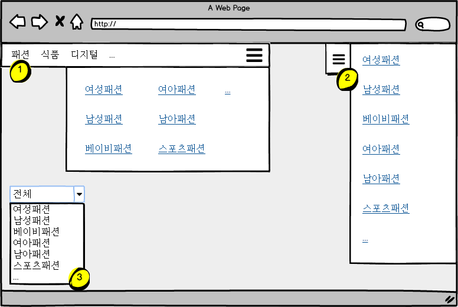
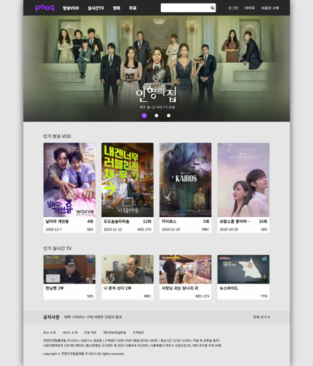
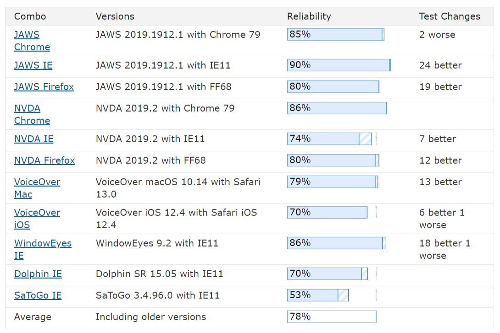
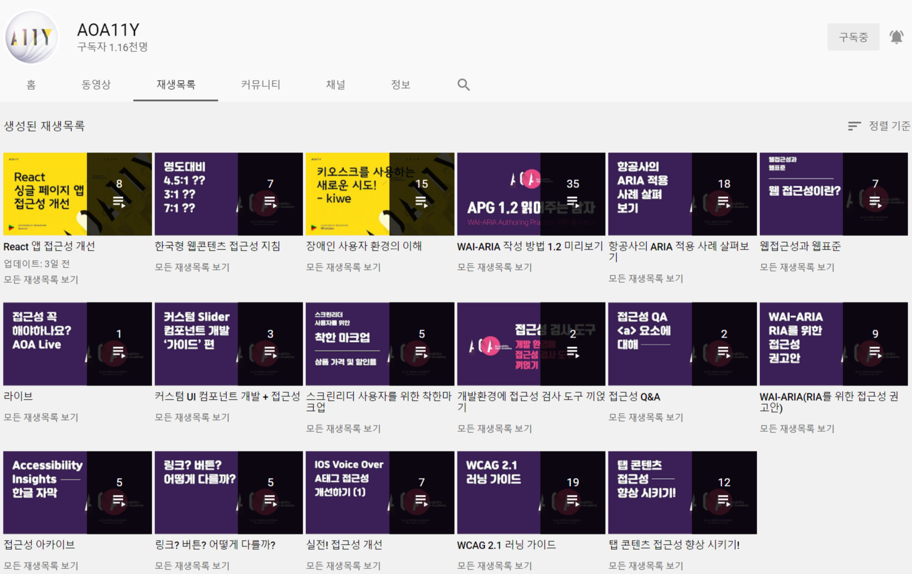

<!doctype html>
<html>
	<head>
		<meta charset="utf-8">
		<meta name="viewport" content="width=device-width, initial-scale=1.0, maximum-scale=1.0, user-scalable=no">

		<title>WAI-ARIA 102: ARIA 사용 이유와 주의해야 할 점</title>

		<link rel="stylesheet" href="dist/reset.css">
		<link rel="stylesheet" href="dist/reveal.css">
		<link rel="stylesheet" href="dist/theme/custom.css" id="theme">

		<!-- Theme used for syntax highlighted code -->
		<link rel="stylesheet" href="plugin/highlight/a11y-dark.css" id="highlight-theme">
	</head>
	<body>
		<div class="reveal">
			<div class="slides">
				<section data-markdown>
					<script type="text/template">
						# WAI-ARIA 102

						ARIA 사용 이유와 주의해야 할 점

						지성봉
					</script>
				</section>
				<section data-markdown>
					<script type="text/template">
						## A11Y &amp; ARIA

						Note:
						"접근성"하면 단골처럼 따라오는 소재가 ARIA 입니다.
						아마도 접근성 세미나에 참여하시는 분들 다수는 ARIA라는 기술을 처음 들어보시는
						분은 없다고 해도 과언이 아닐 것 같습니다.

						그런데 과거 세미나 발표들을 복기해보니 ARIA를 소개하고 어떻게 적용하는지 
						기술적인 부분들이나 명세 상의 설명들은 계속 짚어 왔는데, ARIA 가 왜 필요한지에 
						대해서는 간소하게 몇 글자 내외로 설명하는 정도로 이루어졌던 것 같습니다. 

						그렇다보니 ARIA 라는 게 있는 건 알겠고, 이걸 쓰면 접근성이 더 향상될 수
						있다고는 하는데 어떻게 얼마나 향상된다는 것인지에 대해서는 실제적으로 와 닿는
						이야기는 없었던 것 같습니다.

						그래서 오늘은 기술적인 설명이나 모범 사례 같은 것은 배제하고, ARIA 적용 전과 
						후의 차이를 스크린리더를 통해서 비교해보고, 적용 코드 같은 것들은 검색을
						통해서도 어렵지 않게 찾아볼 수 있으니까 코드 보다는 적용 시 주의해야 할 점에
						대해서 이야기 해보려고 합니다.
					</script>
				</section>
				<section>
					<section data-markdown>
						<script type="text/template">
							# Why ARIA?

							Note:
							접근성 이야기가 나오면 왜 ARIA가 단골메뉴처럼 따라 나오는 걸까요?
						</script>
					</section>
					<section data-markdown>
						<script type="text/template">
							## Native HTML의 한계

							Note:
							접근성과 ARIA의 관계를 이야기 하자면,
							먼저 접근성에 대한 native HTML의 한계를 이야기 해 보아야 할 것 같습니다.
						</script>
					</section>
					<section data-markdown>
						<script type="text/template">
							```html
							<a href="#">전체</a>
							<ul>
								<li><a href="#-1" rel="-1">전체</a></li>
								<li><a href="#186764" rel="186764">여성패션</a></li>
								<li><a href="#187069" rel="187069">남성패션</a></li>
								<li><a href="#213201" rel="213201">베이비패션</a></li>
								<li><a href="#213514" rel="213514">여아패션</a></li>
								<li><a href="#213741" rel="213741">남아패션</a></li>
								<li><a href="#187821" rel="187821">스포츠패션</a></li>
							</ul>
							```

							Note:
							이건 제가 자주 이용하는 사이트의 어떤 UI 한 부분의 코드를 떼온겁니다.

							class명은 이 코드 해석에 선입견을 줄 수 있어서 일부러 제거한 상태이고,
							나머지는 그대로입니다.

							이 코드는 어떤 UI이고 어떻게 사용하는 걸까요?

							참고로 아래 &lt;ul>은 "전체"라는 anchor 요소를 활성화, 즉 엔터키를 눌렀을
							때 동적으로 생성된 부분입니다.
							다시 말해, 초기에는 "링크 전체"에만 접근이 되고 활성화 시키지 않으면
							이후의 다른 콘텐츠로 넘어갑니다.

							과연 어떤 UI일까요?
						</script>
					</section>
					<section data-markdown>
						<script type="text/template">
							

							Note:
							1, 2, 3 중 어떤 것일지 예상이 되시나요?
						</script>
					</section>
					<section data-markdown>
						<script type="text/template">
							 <!-- .element: style="width: 100%" -->
							 <!-- .element: style="width: 100%" class=" fragment" -->

							Note:
							마크업의 주인은 바로 이 UI 였습니다.

							사실 이 마크업은 꽤 많이 쓰이는 편입니다.
							초록창에서도 쉽게 볼 수 있는 마크업이기도 하구요.

							그런데, 이 마크업에는 몇 가지 문제가 있습니다.

							이 마크업을 스크린리더로 읽어보면
						</script>
					</section>
					<section data-markdown>
						<script type="text/template">
							> 링크 전체 <!-- .element: style="text-align: left" -->
							> 편집창 <!-- .element: style="text-align: left" -->
							> 찾고 싶은 상품을 검색해보세요! <!-- .element: style="text-align: left" -->
							> 링크 마이크 <!-- .element: style="text-align: left" -->
							> 링크 검색 <!-- .element: style="text-align: left" -->

							Note:
							이러한 결과가 나오는데요,

							"링크 전체"가 select box 컴포넌트라는 것을 이해할 수도 없을 뿐더러,
							select box 컴포넌트임을 이해할 수 없으니 사용 방법 역시 알 수 없습니다.
							그냥 누르면 전체를 볼 수 있는 페이지로 이동될 거라고 예상하게 될 겁니다.

							select box 컴포넌트에 필요한 정보들은,

							- 이것이 셀렉트 박스라는 것과,
							- 현재 선택된 옵션 항목은 무엇인지,
							- 옵션 항목은 몇 개가 있는지,
							- 현재 어느 위치의 옵션을 탐색하고 있는지,
							- 옵션을 펼쳐놓았는지 접어놓았는지

							등인데 native HTML로는 이러한 정보를 주는데 한계가 있습니다.

							숨김 텍스트로 이것이 select box라는 정보는 줄 수 있고
							&lt;li> 엘리먼트를 이용해서 옵션 항목이 몇 개가 있는지의 정보는 줄 수 있을 것
							같지만, 현재 어느 위치의 옵션을 탐색 중인지, 옵션을 펼쳐 놓았는지 접어
							놓았는지는 숨김 텍스트로도 제공하기 어렵습니다.

							동적으로 숨김 텍스트를 넣는다고 해도 이 텍스트가 있는 요소로 초점을 이동시키지
							않는 한 해당 내용은 사용자에게 전달되지 않기 때문입니다.

							이러한 native HTML의 한계를 보완하고 적절한 의미와 정보를 보조기술을 통해
							사용자에게 전달할 수 있도록 하는 것이 ARIA 기술입니다.
						</script>
					</section>
				</section>
				<section data-markdown>
					<script type="text/template">
						## So what?

						Note:
						하지만 이렇게 이야기해서는 '그래서 뭐가 나아진다는 건데?'' 라는 의문이 남는
						분들이 많이 계실거라고 생각합니다.

						그래서 ARIA를 사용한 실제 사례를 가지고 적용 전과 후의 차이를 보여드리려고 합니다.

						이 차이를 보시고 난 이후에 접근성 향상을 위해서 ARIA를 사용할 것인지 말것인지는
						여러분의 몫으로 남겨드리고자 합니다.
					</script>
				</section>
				<section>
					<section data-markdown>
						<script type="text/template">
							Practical Case

							

							Note:
							3년 전에 제가 마지막으로 작업했던 사이트의 샘플이구요,
							이 페이지를 가지고 ARIA 적용 전 후의 차이를 비교해 볼 겁니다.

							발표를 위해 다시 만들기는 했지만,
							3년전에 사용 된 ARIA 기술은 거의 동일하게 적용 되어 있습니다.

							바뀐 부분은 ARIA 버전이 올라가면서 명세 상 변경 된 부분들 정도에서 추가 혹은
							수정 반영되었습니다.

						</script>
					</section>
					<section data-markdown>
						<script type="text/template">
							## Before Test

							- [NVDA](https://www.nvaccess.org/download/) + [FireFox](https://www.mozilla.org/ko/firefox/new/) 조합으로 테스트 되었습니다.

							Note:

							본 테스트는 NVDA + FireFox 조합으로 이루어졌습니다.

							---

							직접 테스트 해보기 원하시는 분은 [Live Demo](https://2020-iat-sample.netlify.app) 페이지에서 사용해보세요
						</script>
					</section>
					<section data-markdown>
						<script type="text/template">
							## Feature

							- non Semantic Element
							- Carousel, ComboBox, Landmark

							Note:
							이 예제에 특징이 있다면, 

							기존 것은 IE 8까지 대응되는 사이트였기 때문에 소위 Semantic Element 부르는
							엘리먼트들 — nav, header, section, footer 등은 사용되지 않았고, 다시
							제작한 버전에도 동일하게 semantic element는 적용하지 않았습니다.
							ARIA가 semantic element가 사용되지 않은 마크업에도 적용 가능하다는 것을
							보여드리고자 함이구요

							기존에는 jQuery로 작성되어 있었는데, 다시 제작한 버전은 Vue로 작성되었습니다.
							역시 사이트 제작 기술과 관계 없이 ARIA 적용이 가능하다는 것이고
							프론트엔드 개발을 하면서 ARIA 적용은 여전히 가능하다는 것을 보여드리기 위함입니다.

							비교해드릴 부분은 Landmark가 적용 된 영역, Carousel, ComboBox 컴포넌트 입니다.

							참고로 시각적으로 화면을 보면서 듣고 있으면 두 가지 정보가 합쳐져서 페이지
							이용에 문제가 없다고 생각될 소지가 있지만, 화면 변화에 대한 정보와 스크린리더를
							통한 정보의 차이를 확인하기 위해서 화면을 가려놓지는 않을 거니까요,
							화면이 보이지 않는 상태라고 가정하고 시청해주시면 좋을 것 같습니다.

						</script>
					</section>
					<section data-markdown>
						<script type="text/template">
							## Landmark 적용 전

							(a.k.a heading 탐색)

							Note:

							그럼 먼저 ARIA를 통한 랜드마크 적용 전에 문서를 탐색하는 방법으로
							헤딩으로 탐색 할 때 어떻게 탐색되는지 보도록 하겠습니다.
						</script>
					</section>
					<section data-markdown>
						<script type="text/template">
							<video class="stretch" controls preload="metadata" poster="./images/movie-thumb.jpg">
    						<source data-src="./videos/01-heading-travel.webm" type="video/webm" />
								<source data-src="./videos/01-heading-travel.mp4" type="video/mp4">
							</video>

							Note:
							참고로, 예제에서는 디자인 상 표시는 되어있지 않아도 모든 섹션에 헤딩을
							구현해두었기 때문에 이 정도는 쉽게 탐색이 가능합니다.

							만일 헤딩을 구현하지 않았다면 콘텐츠 탐색을 위해서 방향키로 탐색을 해야 했을
							것이고, 페이지의 구조를 이해하는데 많은 어려움이 있었을 겁니다.
						</script>
					</section>
					<section data-markdown>
						<script type="text/template">
							## Landmark 적용 후

							Note:

							이번에는 ARIA를 통해 랜드마크를 적용했을 때 어떤 차이가 있는지 보도록 하겠습니다.
						</script>
					</section>

					<section data-markdown>
						<script type="text/template">
							<video class="stretch" controls preload="metadata" poster="./images/movie-thumb.jpg">
    						<source data-src="./videos/02-landmark-travel.webm" type="video/webm" />
								<source data-src="./videos/02-landmark-travel.mp4" type="video/mp4">
							</video>

							Note:
							어떤가요?
							헤딩 만으로 문서를 탐색할 때와는 제공 되는 정보에 차이가 있죠?

							랜드마크는 영역 단위를 기준으로 탐색하기 때문에 영역을 잘 나누어 두었다면
							좀 더 자세한 탐색이 가능하고

							예제에서는 영역에 대한 이름을 헤딩으로 사용하고 있기 때문에 헤딩 탐색 시의
							제공 정보와 더불어 좀 더 이해를 도울 수 있는 정보가 추가로 제공되는 형태를
							가집니다.
						</script>
					</section>
					<section data-markdown>
						<script type="text/template">
							## ComboBox 적용 전

							Note:
							이번에는 콤보 박스 컴포넌트에 해당하는 부분을 스크린리더로 들어보도로 하겠습니다.

							먼저, native HTML 구현입니다.

						</script>
					</section>
					<section data-markdown>
						<script type="text/template">
							<video class="stretch" controls preload="metadata" poster="./images/movie-thumb.jpg">
    						<source data-src="./videos/03-combobox-native.webm" type="video/webm" />
								<source data-src="./videos/03-combobox-native.mp4" type="video/mp4">
							</video>

							Note:
							화면에는 분명 변화가 있는데 스크린리더에서는 변화가 없습니다.

							더구나 편집창이라고만 확인되기 때문에 현재 사용 중인 부분이 콤보 박스일거라고는
							생각조차 할 수 없습니다.

							물론, Enter키를 누르면 해당 검색 결과 페이지로 이동이 되겠지만,
							정상 시각을 가진 사용자와는 매우 다른 사용법을 가지게 됩니다.

							영상 후반부에서는 콤보박스 목록을 탐색을 해봤는데
							이후 보여드릴 영상과 비교해 드리려고 운용을 해본 것이지,
							아마도 스크린리더 사용자는 목록의 존재조차 알 수 없기 때문에 운용이 불가능할겁니다.

						</script>
					</section>
					<section data-markdown>
						<script type="text/template">
							## ComboBox 적용 후

							Note:
							이번에는 ARIA가 적용되었을 때 전달 정보에 어떤 변화가 있는지 알아보도록 하겠습니다.
						</script>
					</section>
					<section data-markdown>
						<script type="text/template">
							<video class="stretch" controls preload="metadata" poster="./images/movie-thumb.jpg">
    						<source data-src="./videos/04-combobox-aria.webm" type="video/webm" />
								<source data-src="./videos/04-combobox-aria.mp4" type="video/mp4">
							</video>

							Note:
							키보드 운용 방법은 이전 영상과 동일하고, 단지 ARIA 관련 어트리뷰트만 추가되었는데,

							현재 사용 중인 콘텐츠가 콤보박스이고 확장 상태인지, 접힌 상태인지,
							현재 몇 개가 검색되었고 몇 번째 것을 탐색하고 있는지 등을 충분히 이해할 수
							있습니다.
						</script>
					</section>

					<section data-markdown>
						<script type="text/template">
							## <!-- .element: class="multiline-heading" --> <span>Carousel</span> <span><small>with</small> indicator</span> <span>적용 전</span>

							Note:
							다음으로는 인디케이터가 있는 carousel 컴포넌트를 이용해보겠습니다.

							먼저, native HTML로만 구현된 상태입니다.
						</script>
					</section>
					<section data-markdown>
						<script type="text/template">
							<video class="stretch" controls preload="metadata" poster="./images/movie-thumb.jpg">
    						<source data-src="./videos/05-carousel-with-indicator-native.webm" type="video/webm" />
								<source data-src="./videos/05-carousel-with-indicator-native.mp4" type="video/mp4">
							</video>

							Note:
							어떤 버튼인지 알기 어려운 것은 차치하더라도,
							버튼을 눌러도 화면의 변화를 사용자에게 알려주지 않기 때문에
							버튼을 눌렀지만 아무 일도 일어나지 않는 것으로 이해하게 됩니다.
						</script>
					</section>
					<section data-markdown>
						<script type="text/template">
							## <!-- .element: class="multiline-heading" --> <span>Carousel</span> <span><small>with</small> indicator</span> <span>적용 후</span>

							Note:
							ARIA가 적용 된 이후를 보겠습니다.
						</script>
					</section>

					<section data-markdown>
						<script type="text/template">
							<video class="stretch" controls preload="metadata" poster="./images/movie-thumb.jpg">
    						<source data-src="./videos/06-carousel-with-indicator-aria.webm" type="video/webm" />
								<source data-src="./videos/06-carousel-with-indicator-aria.mp4" type="video/mp4">
							</video>

							Note:

							ARIA가 적용 된 이후에는 현재 사용하려는 콘텐츠가 carousel인 것을 알 수 있고,
							따라서 콘텐츠를 어떻게 이용할 수 있는지를 이해하고 시작할 수 있을 겁니다.

							또한 키보드 조작에 따라 콘텐츠가 어떻게 변경되고 있는지를 계속해서 확인 할 수
							있고, 슬라이드 항목에 접근 시 접근 한 콘텐츠가 carousel 영역의 것임을
							계속해서 이해할 수 있기 때문에 콘텐츠 맥락을 이해하는데 어려움이 줄어들 것입니다.

						</script>
					</section>
					<section data-markdown>
						<script type="text/template">
							## <!-- .element: class="multiline-heading" --> <span>Carousel</span> <span><small>with</small> Paging</span> <span>적용 전</span>

							Note:
							이번에는 페이지 단위의 carousel을 살펴보도록 하겠습니다.
						</script>
					</section>
					<section data-markdown>
						<script type="text/template">
							<video class="stretch" controls preload="metadata" poster="./images/movie-thumb.jpg">
    						<source data-src="./videos/07-carousel-paging-native.webm" type="video/webm" />
								<source data-src="./videos/07-carousel-paging-native.mp4" type="video/mp4">
							</video>

							Note:
							앞서와 마찬가지로 버튼을 눌러도 아무런 변화를 알려주지 않기 때문에
							화면에서 어떤 일이 일어나고 있는지 이해할 수 없고
							캐로셀인 것을 모르는 건 둘째 치더라도 몇 개의 컨텐츠를 탐색해 볼 수 있는지
							조차도 알기 어렵습니다.

							심지어는 자동 넘김 기능이 있는 경우, 접근 시점마다 다른 콘텐츠가 전달될 테니
							보고(?) 지나 온 영역인지를 이해하는 것도 쉽지 않을 겁니다.
							아까는 없었던거 같은데?라는 생각이 먼저 들 것이고, 지나친 곳인가 싶어 다시
							탐색을 해봐도 앞서 탐색한 동일한 콘텐츠 위치를 찾는 것 자체가 어려울 것이고,
							따라서 콘텐츠 맥락을 이해하는데 어려움을 겪게 될 겁니다.
						</script>
					</section>
					<section data-markdown>
						<script type="text/template">
							## <!-- .element: class="multiline-heading" --> <span>Carousel</span> <span><small>with</small> Paging</span> <span>적용 후</span>

							Note:
							그렇다면 ARIA가 적용 된 이후 상태를 보도록 하겠습니다.
						</script>
					</section>

					<section data-markdown>
						<script type="text/template">
							<video class="stretch" controls preload="metadata" poster="./images/movie-thumb.jpg">
    						<source data-src="./videos/08-carousel-paging-aria.webm" type="video/webm" />
								<source data-src="./videos/08-carousel-paging-aria.mp4" type="video/mp4">
							</video>

							Note:
							슬라이드 컨트롤 버튼을 선택 할 때마다 carousel 페이지가 변경되고 있음을 알 수 있고,
							슬라이드 항목 영역에 접근 했을 때 몇 번째 페이지에 해당하는 콘텐츠에 접근
							된 것인지를 알 수 있습니다.

							이 정보들을 토대로 사용자는 총 몇 개의 콘텐츠(페이지)를 더 탐색할 수 있는지를
							예측 할 수 있고, 페이지를 제어할 수 있으므로 native로 구현되어 있을 때 보다
							더 쉽게 이용할 수 있을 겁니다.
						</script>
					</section>

				</section>

				<section data-markdown>
					<script type="text/template">
						## <!-- .element: class="multiline-heading" -->  <span>Why Use ARIA,</span> <span>Should I Use ARIA?</span>

						Note:
						어떤가요? ARIA 적용 전 후의 차이가 체감되시나요?

						두 가지 UI 컴포넌트 정도에 대한 ARIA 적용 전 후 차이를 보여드렸는데요,
						W3C는 accordion, dialog, listbox, slider, tree view등 native HTML
						만으로는 충분한 의미와 정보를 제공하기 어려운 28개의 컴포넌트에 대한 예제를
						보여주고 있습니다.

						적어도 28개 컴포넌트 케이스에 대해서는 누군가 먼저 정리해둔 것을 통해서
						ARIA 적용으로 더 나은 접근성을 제공할 수 있다는 말이겠죠?

						이것이 접근성에 ARIA가 단골 메뉴 처럼 땨라 다니는 이유이고,
						ARIA를 사용할 것인지 말 것인지는 여러분의 선택으로 남겨두겠습니다.
					</script>
				</section>
				<section>
					<section data-markdown>
						<script type="text/template">
							## ARIA 작성 시 주의 사항

							Note:
							당연히 전 ARIA를 사용하기로 선택했기 때문에 이 발표를 하는 것이니까요
							이제 ARIA를 적용할 때 주의해야 할 부분들에 대해서 이야기 해보려 합니다.
						</script>
					</section>
				</section>
				<section>

					<section data-markdown>
						<script type="text/template">
							## Don't Use ARIA

							<blockquote style="width: 90%; text-align: left">
								<p>
									의미론과 이미 내장 된 필요한 동작을 가진 기본 HTML 엘리먼트와 어트리뷰트를 사용할 수 있다면, 접근 가능하게 하기 위해 엘리먼트의 용도를 변경하고
									ARIA rolet, state, property를 추가하는 대신 그것들을 사용하세요.
								</p>
								<cite><a href="https://www.w3.org/TR/using-aria/#rule1" target="_blank" rel="noopener noreferrer">- 2.1 First Rule of ARIA Use in Using ARIA</a></cite>
							</blockquote>


							Note:
							첫 번째로 주의해야 할 사항은 ARIA를 사용하지 말라는 겁니다.
							ARIA를 사용할 때 주의할 점인데 ARIA를 사용하지 말라는게 좀 아이러니 하죠?
							하지만, 정말로 ARIA 사용의 주의할 사항은 ARIA를 사용하지 말라는 겁니다.

							W3C 문서 중에 Using ARIA 라는 문서를 보면,
							ARIA 사용의 첫 번째 규칙이 바로 **&ldquo;native HTML 엘리먼트를 사용할 수
							있으면 ARIA를 사용하지 말고 native를 사용하라&rdquo;**는 겁니다.

							ARIA는 어디까지나 native가 해결하지 못하는 것을 보완하기 위한 기술이므로
							주 기술을 충분히 사용하고 주 기술로 해결되기 어려운 것을 보완하는데 ARIA를
							사용하셔야 합니다.
						</script>
					</section>
					<section data-markdown>
						<script type="text/template">
							## <small>but also,</small>
							## Don't Use Fallback

							Note:
							물론 그렇다고해서,
							가능한 Native를 사용한다고 fallback을 사용하는 것은 지양해야 합니다.

							label을 대체 하기 위한 수단으로 `title`이나 `placeholder` 어트리뷰트를
							사용하는 그런 것 말이죠.

							fallback은 도저히 방법이 없을 때 브라우저가 추론하게 하는 방법이기 때문에
							가장 신뢰도가 낮은 품질을 가져오게 됩니다.
						</script>
					</section>
					<section data-markdown>
						<script type="text/template">
							Native >>> ARIA >>>...>>> Fallback

							Note:
							표현하자면 이 정도가 될 것 같습니다

							Native가 최우선으로 검토되어야 할 기술이고,
							Native로 해결되지 않는 경우에 ARIA를 사용하며,
							온갖 것들을 다 시도해 보았음에도 도저히 방법이 서지 않을 경우에 fallback을
							시도하는 것이 좋을 것 같다는 의견을 드립니다.
						</script>
					</section>
				</section>
				<section>
					<section data-markdown>
						<script type="text/template">
							## 키보드 접근성 보장

							Note:
							많은 분들이 키보드 접근성 보장에 대해 이야기 하면,
							`tab`키에 의한 초점 정도로만 생각하시는 분들이 많이 계실 텐데요
						</script>
					</section>
					<section data-markdown>
						<script type="text/template">
							## <!-- .element: class="multiline-heading" --> <span>키보드 운용, 초점,</span> <span>선택, 이동 순서 등</span>

							Note:
							많은 분들이 키보드 접근성 보장에 대해 이야기 하면 tab 키에 의한 초점 정도로만 생각하시는 분들이 많이 계실 텐데요,

							키보드 접근성은 키보드 운용, 초점, 선택, 이동 순서 등을 포함합니다.
						</script>
					</section>
					<section data-markdown>
						<script type="text/template">
							## <!-- .element: class="multiline-heading" --> <span><kbd>tab</kbd>, <kbd>enter</kbd>, <kbd>space</kbd>,</span> <span><kbd>←</kbd>, <kbd>→</kbd>, <kbd>↑</kbd>, <kbd>↓</kbd> 등등...</span>

							Note:
							<kbd>tab</kbd>키 뿐이 아니라, 인터랙티브 요소라면 <kbd>enter</kbd>키나
							<kbd>space</kbd>키에도 대응이 되어야 할 것이고, carousel이나 tab 컴포넌트
							같은 경우는 방향키로 조작이 가능해야 합니다.

							모달 대화상자나 자동 재생이 있는 컴포넌트 같은 경우는 <kbd>ESC</kbd>키로
							닫거나 중지시킬 수도 있어야 겠죠.
						</script>
					</section>
					<section data-markdown>
						<script type="text/template">
							<blockquote style="width: 100%; text-align: left; font-size: .75em">
								<p>
									기본 HTML 양식 요소(element)들과 달리, 브라우저는 ARIA로 접근 가능하게
									만들어진 그래픽 유저 인터페이스(GUI) 컴포넌트에 대한 키보드 지원을
									제공하지 않습니다; 작성자는 코드에 키보드 지원을 제공해야 합니다.
								</p>
								<cite><a href="https://mulder21c.github.io/aria-practices/#keyboard">- 키보드 인터페이스 개발 in WAI-ARIA Authoring Practice</a></cite>
							</blockquote>

							<blockquote style="width: 100%; text-align: left; font-size: .75em">
								<p>
									키보드로 조작할 경우, 좋은 경험의 두 가지 필수 요소는 키보드 초점의
									위치를 쉽게 식별할 수 있고 탐색 키가 눌린 후 초점이 놓인 위치를 예측 할
									수 있는 기능입니다
								</p>
								<cite><a href="https://mulder21c.github.io/aria-practices/#kbd_focus_discernable_predictable">- 식별 가능하고 예측 가능한 키보드 초점 in WAI-ARIA Authoring Practice</a></cite>
							</blockquote>

							Note:
							Authoring Practice Guide 문서에서는 명확하게 이렇게 설명하고 있습니다.

							carousel을 만든다거나 combobox를 만든다거나 할 때 키보드 대응을
							<kbd>tab</kbd>키 정도에만 그치는 경우가 많은데요, 해당 컴포넌트를
							운용하는데 필요한 모든 key 대응을 제공해야 합니다.
						</script>
					</section>

					<section data-markdown>
						<script type="text/template">
							## ❌ `outline: 0` ❌

							Note:
							키보드 접근성을 보장하는 일에는 시각적으로 초점을 표시하는 것 역시 포함됩니다.

							포커스링이 예쁘지 않다는 이유로 없애 달라는 요청을 하는 디자이너나 기획자
							분들도 계십니다. 하지만 예쁜 걸 위해서 특정 사용자는 사용하지 말라는 것은
							당연히 접근성에 위배됩니다.

							예쁘지 않다면 디자이너가 포커스링을 예쁘게 디자인해서 전달해주면 그걸 구현할
							수도 있는 것이고, 무조건 포커스링이 보이지 않기를 원한다면 키보드 접근 시에만
							포커스링을 제공하는 방법도 구현할 수 있습니다.

							단지 방법을 모르기 때문에  outline: 0와 같은 코드가 작성된다고 믿고 싶습니다.
						</script>
					</section>

					<section data-markdown>
						<script type="text/template">
							<blockquote style="width: 100%; text-align: left; font-size: .8em">
								<p>
									경우에 따라, 동시에 한 페이지에 두 요소가 초점을 가지는 것처럼 나타날 수
									있습니다. 예를 들어, 다중 선택 목록 상자에서, 옵션이 선택되는 경우
									회색으로 표시 될 것입니다. 그러나, 초점 표시기는 선택 될 수 있는 다른
									옵션으로 여전히 이동 될 수 있습니다. 마찬가지로, 사용자가 탭 목록에서
									탭을 활성화시키면, 선택된 상태가 탭에 설정되고 시각적 모양이 변경됩니다.
									하지만 사용자는 탭이 선택 된 모양과 상태를 유지하면서 페이지의 다른
									곳으로 초점 표시기를 이동하면서 여전히 탐색 할 수 있습니다.
								</p>
								<cite><a href="https://mulder21c.github.io/aria-practices/#kbd_focus_vs_selection">- 초점 vs 선택, 이중 초점 인식 in WAI-ARIA Authoring Practice</a></cite>
							</blockquote>

							Note:
							간혹 `outline: 0`는 접근성에 위배되는 것은 알지만 포커스링은 제거하고 싶은
							요구사항을 가진 경우 포커스링 대신 색상이나 크기 등을 이용해서 처리하는 경우도
							있습니다.

							만일 그러한 방법을 사용한다면 초점표시와 선택 상태 표시를 다르게 사용해야 함을
							주의해야 합니다.

							선택 목록 상자에서 선택된 항목과 초점을 얻고 있는 항목의 구분, 활성화 된 탭과
							초점을 얻고 있는 탭의 구분이 가능해야 한다는 겁니다.

							그리고 물론 이 구분은 색맹, 색약, 저시략자가 보기에도 구분이 가능해야 합니다
						</script>
					</section>

					<section data-markdown>
						<script type="text/template">
							# Do Test!!

							Note:
							마지막 주의 사항은 테스트를 꼭 하시라는 겁니다.
						</script>
					</section>

					<section data-markdown>
						<script type="text/template">
							

							Note:
							같은 스크린리더라도 어느 브라우저에서 사용하느냐에 따라 결과에 차이가 발생합니다.
						</script>
					</section>

					<section data-markdown>
						<script type="text/template">
							<blockquote style="width: 100%; text-align: left; font-size: .8em">
								<p>
									제품에 이 가이드의 코드를 사용하기 이전에 보조 기술 상호 운용성 테스트가
									필수적입니다. 이 지침의 목적은 ARIA 명세에 정의 된 대로 ARIA 1.2의
									적절한 사용을 실제로 보여주는 것이기 때문에, 설계 패턴, 참고 예제, 샘플
									코드는 일부러 브라우저와 보조 기술들의 ARIA 1.2에 대한 지원의 격차에
									따른 문제를 해결하기 위한 코딩 기법을 기술하고 구현하지 않습니다.
									따라서, 대상 고객과 관련된 각 브라우저와 보조 기술 조합으로 구현을
									철저하게 테스트 하는 것이 바람직합니다.
								</p>
								<cite><a href="https://mulder21c.github.io/aria-practices/#browser_and_AT_support">- 브라우저와 보조 기술 지원 in WAI-ARIA Authoring Practice</a></cite>
							</blockquote>

							Note:
							더불어 지침의 예제를 참고하여 작성한다 하더라도, 해당 예제가 모든 보조 기술의
							지원 차이를 고려하고 예제를 만드는 것이 아니기 때문에, 지침에서도 테스트가
							필수라고 언급합니다.

							프로덕트를 개발할 때 지원 브라우저, 지원 단말기의 범위를 정해놓고 시작하듯,
							보조 기술 대응도 비슷한 맥락으로 지원 범위를 설정하고 그 지원 범위에 맞게
							적절한 기술과 기법을 사용하시는 것이 사용성을 떨어뜨리지 않을 수 있습니다.
						</script>
					</section>
				</section>
				<section data-markdown>
					<script type="text/template">
						

						Note:
						더 자세한 내용은 AOA11Y 유튜브 채널에서 더 상세하게 찾아 보실 수 있습니다.
						AOA11Y 유튜브 채널은 정보화 진흥원에서 8명의 접근성 연구반 분들이 격주로
						콘텐츠를 올려드리고 있습니다.

						오늘 발표한 ARIA 기술을 어떻게 작성해야 하는지에 대한 자세한 내용도 W3C 문서
						번역과 함께 영상을 올리고 있고 아마도 내년이면 컴포넌트별 ARIA 적용 방법도
						올라 갈 예정이고,

						ARIA 외에도 접근성에 관련한 여러 콘텐츠들이 올라오고 있으니 채널 오셔서 필요한
						정보들 보시고, 궁금한 것이 있으면 댓글 남겨주시면 저희 연구반 분들이 답변을
						드리거나 접근성 개선을 위한 방법을 함께 고민해 드릴겁니다.
					</script>
				</section>

				<section data-markdown>
					<script type="text/template">
						- AOA11Y

							[https://www.youtube.com/aoa11y](https://www.youtube.com/aoa11y)

						- Live Demo

							[https://2020-iat-sample.netlify.app](https://2020-iat-sample.netlify.app)
					</script>
				</section>
			</div>
		</div>

		<script src="dist/reveal.js"></script>
		<script src="plugin/notes/notes.js"></script>
		<script src="plugin/markdown/markdown.js"></script>
		<script src="plugin/highlight/highlight.js"></script>
		<script>
			// More info about initialization & config:
			// - https://revealjs.com/initialization/
			// - https://revealjs.com/config/
			Reveal.initialize({
				hash: true,

				// Learn about plugins: https://revealjs.com/plugins/
				plugins: [ RevealMarkdown, RevealHighlight ],
				markdown: {
					sanitize: false,
				},
				showNotes: true,
			});
		</script>
	</body>
</html>
